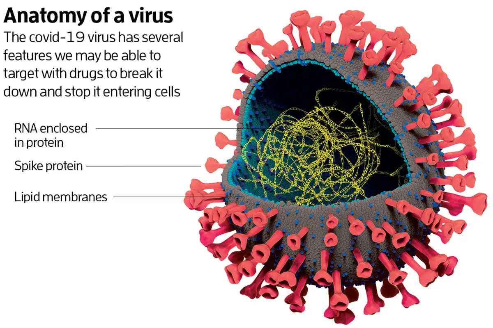
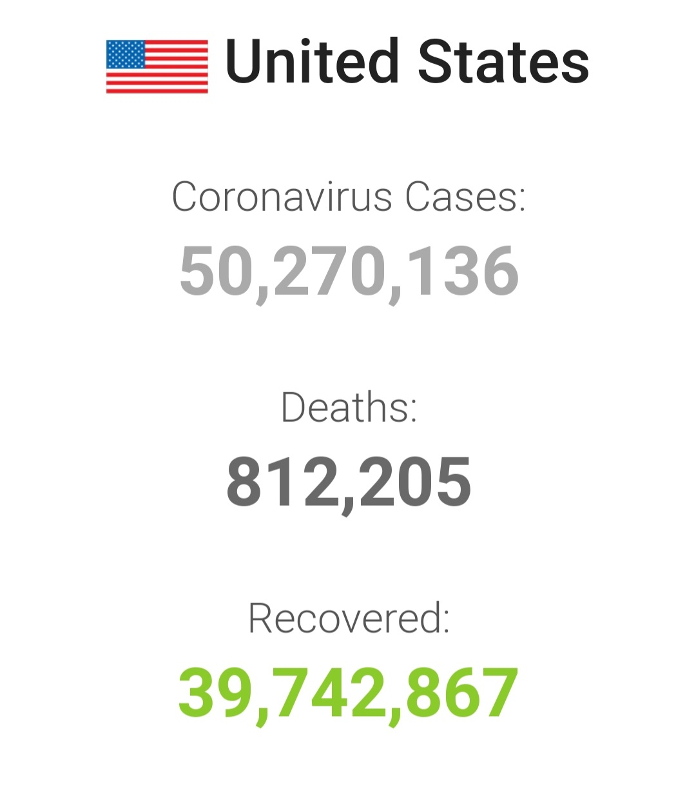
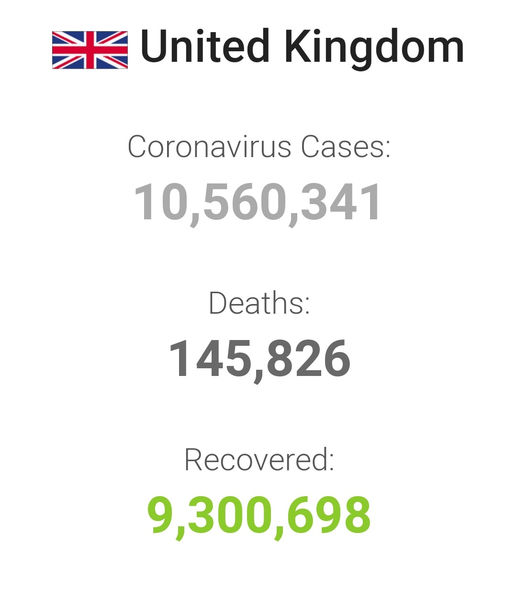

Coronavirus
-
Coronavirus is a priority problem in recent years.
Coronaviruses are a type of virus. There are many different kinds, and some cause disease. A coronavirus identified in 2019, SARS-CoV-2, has caused a pandemic of respiratory illness, called COVID-19. In the past, several infectious disease outbreaks have been traced to viruses originating in birds, pigs, bats and other animals that mutated to become dangerous to humans. Research continues, and more study may reveal how and why the coronavirus evolved to cause pandemic disease.
COVID-19 symptoms include:
Cough, Fever or chills, Shortness of breath or difficulty breathing, Muscle or body aches, Sore throat, New loss of taste or smell, Diarrhea, Headache, New fatigue, New fatigue, Nausea or vomiting, Congestion or runny nose
 -
Solutions in the USA
The biggest reason of USA succes in fight vs COVID is a Vaccine. Moderna received $ 1.4 billion to develop and test its vaccine and another $ 8.1 billion to produce 500 million doses for USA. The company estimates the vaccine is 94% effective.
Solutions in the UK
Currently, the Pfizer-BioNTech, Oxford-AstraZeneca, Moderna and one-shot Janssen vaccines are approved for use throughout the UK. Others, such as those produced by Novavax and Valneva, have not yet been given the green light.

-
Statistics in the USA
The situation in USA:
Since 2020, 50mln cases confirmed 812thd of them dead and 39mln patients recovered
Vaccinations:
236,363,835 (71.19%) (People with at least one dose)
198,156,371(59.68%) (Fully vaccinated people)Statistics in the UK
The virus reached the UK in late January 2020. As of 6 December 2021, there had been 10,523,316 confirmed cases. The UK has the world's 7th highest death toll and 28th highest death rate by population.
The Situation in UK:
10mln cases confirmed 145thd of them dead and 9mln patients recovered.
Vaccinations:
51,138,245 (Total vaccinated)
46,582,425 (Fully vaccinated)
118,630,479 (Doses administered) 